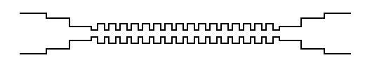
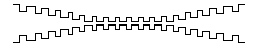
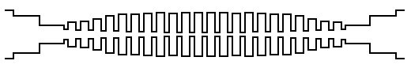
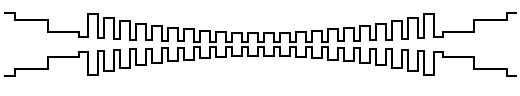
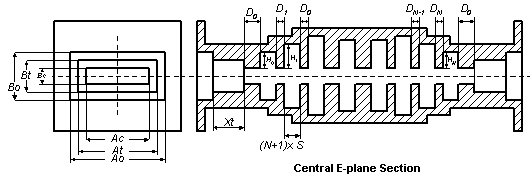
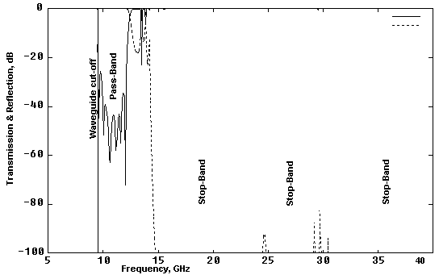
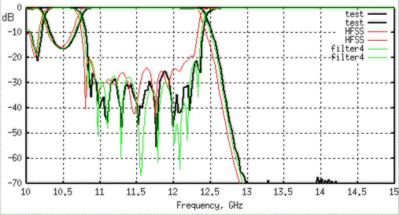

Brief
History of Corrugated Filters
Corrugated
waveguide and “waffle iron” filters were first introduced by Conh [1] in 1948. The structure used there is schematically
shown in Figure 1.

Figure 1:
Corrugated filter by Conh [1].
The
design approach is based on representing a periodic E-plane corrugated delay
structure as a uniform waveguide of a particular characteristic impedance [2] and
matching with waveguide interface by multi-step transformer. Therefore the
procedure is based on some uncertainty and involve rather complicated procedures
requiring empirical adjustments to experimental filters before a satisfactory
final design is achieved [3]. Later design methods using modern circuit theory
and synthesis techniques have been fundamentally developed by Levy [3] and
generalized for wide class of tapered corrugated waveguide filters [4]. The
filter structure has been tapered by Levy in several different ways and
associated with Chebychev and Zolotarev functions response.

Figure 2:
Tapering of corrugated waveguide from interface waveguide to smaller central
aperture.

Figure 3:
Tapered Chebychev function stub filter.

Figure 4:
Tapered Zolotarev function stub filter.
Although
the theory of corrugated filters had been powerfully boosted and theoretically
optimal structures developed, generally tapered corrugated filters are not
often used in microwave applications as harmonic filters because of some
practical inconveniences.
Manufacturable Filters
Modern
practical requirements for harmonic filters are mostly based on low cost, small
size, low loss, wide stop-band and extremely high power handling. Over these
requirements optimal ratio between power handling capacity and spectrum
rejection could not necessary require tapering the filter structure. Moreover,
the Conh design would definitely be preferred for production [Fig. 3].
Apart from general production complexity some quality
assurance issues can be mentioned. If the filter is made by regular machining
methods, all cavities are expected to be rounded and random tolerances to be
applied to all dimensions of the filter structure. Deviation of scattering
properties of each discontinuity over tolerance would be greater, if each
discontinuity scatter differently. In other word, there should be
uniformity and similarity in deviations of scattering properties of
corrugations over tolerance in order to reduce total impact of manufacturing
errors. Therefore in my engineering practice I prefer a simplified Levy [see
Figure 5] structure, i.e. a format between generally tapered [Levy] and periodic
[Conh] structures.

Figure 5:
Simplified tapered corrugated filter.
Here
gap b and spacing s are
selected the same over all corrugations for production preferences. One
transformer section should be enough for transition from larger interface for
most applications.
Design
Method
I
have not found useful making accent on Zolotarev, Chebychev or other special function of similarity
frequency response, when designing regular corrugated filter. This is because the
conventional synthesis methods are to build a “good looking” pass-band and
roll-off rather than harmonic frequencies where the functions do not model the
reality. On the other hand the standard methods limit the designer to
control other important technical features such as power handling, size, or
manufacturability, which are not directly associated with formal prototypes but
are very important. In this case the optimal practical filters might be quite
different from any classical prototype. For example, the filter response showed
in Figure 6 would be preferable for customer if it is cheap and matching the
spec.

Figure 6:
Non-esthetic filter example
However
fast development of computer technologies have made possible direct
optimization of whole filter structure over specific requirements. Direct
optimization method has many advantages in comparison to conventional
synthesis methods because it gives much flexibility for designers and result
in an optimal filter comprising of the best ratio of parameters. It is also very
beneficial for a design engineer, because it makes him or her real artist. In
order to use that power technique the right starting point and optimization
constrains must be found. Here, in my Design Studio, the technique is applied
to common harmonic corrugated filter to demonstrate how simple and efficient it
could be.
Electromagnetic
model
In
order to use direct optimization methods, a fast computer algorithm should be
created in order to run over huge variety of combinations of dimensions
increments and frequencies. Unfortunately the modern engineering software based
on FEM or other universal numerical methods cannot be used to create an
effective variational engine for optimization, because it is very slow and not
regular over increments. I have found the old-fashioned variational Ritz-Galerkin or perturbation methods to be perfect to model
filters, because they are “smooth” and can be realized
in simple math manipulations. However, the accuracy of such type of “formulas”
can be even better than accuracy of the most powerful universal numerical
technique. For example, the correlation between measured data and data simulated
by FEM based on HFSS and three pages FORTRAN code based on variational estimations
[Figure 7].

Figure 7: Frequency response of a corrugated filter over WR75
frequency operation range. The black line shows frequency data measured by a HP
vector network analyzer. The red line shows data obtained from HFSS, a FEM based
simulator, using twenty passes and discrete sweep. The green line shows data
simulated by “filter4”, a FORTRAN module based on variational estimations.
The
computation time difference impresses more, as it took only 0.5 seconds the
FORTRAN model to run over 350 frequency points in comparison with HFSS running
100 points overnight on the same UNIX platform.
Online
Realization
Unfortunately
the word wide web much limits possibilities to run engineering software on the
both server and client side. The servers usually put restrictions on using exe
modules and accessing them. The client side is also limited by capability of
internet browsers, which are indeed not created to run serious software.
However it is possible to run simple algorithms based on scripts on the both
sides. The corrugated filter design pages presented here are based on VBScript
code supported by any Microsoft Internet Explorer of version better than 3.02.
The scripts are about 10 times slower than PC based module compiled from
FORTRAN code of the same function. Nevertheless, it is a convenient way to design a filter
while surfing internet.
[1]
S.B. Conh “A theoretical and experimental study of a
waveguide filter structure”, Office Naval Res., Cruft
Lab., Harvard Univ., Cambridge, Mass., Rep. 39, Apr. 25, 1948.
[2] C.G. Matthaei, L. Young, and E. M.
T. Jones, “Microwave Filters, Impedance Matching Networks, and Coupling
Structures”,
[3]
R. Levy “Tapered Corrugated Waveguide Low-Pass Filter”, IEEE Trans. Microwave
Theory Tech., MTT-21, August 1973, pp. 526-532.
[4]
Ralph Levy, “Aperiodic Tapered Corrugated Waveguide
Filter”, US Patent 3,597,710,